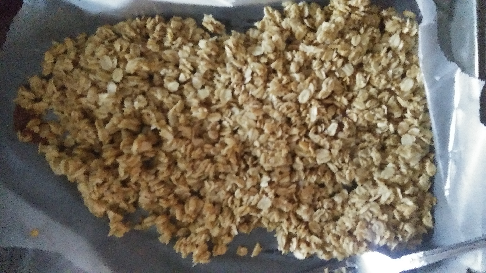
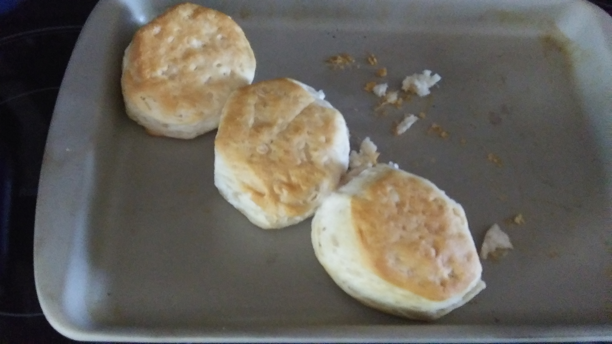

Cullinary
I just made some granola stuff and it's pretty good

Ingredients:
- 1.5 cups Old Fashioned Oats
- 0.125 cups Oil
- 0.125 cups honey or maple syrup
- 0.125 cups brown sugar
- 1 teaspoon vanilla extract
- 0.125 cup milk if you want less flavor for some reason.
Instructions:
- Preheat to 325 degrees Fahrenheight
- Use a cookie sheet with parchment paper
- Mix all the ingredients in a bowl
- Unceramoniously dump it all into the cookie sheet (on top of the parchment paper)
- Bake for about 10-20 minutes and stop and stir occasionally.
- Put in little bag and eat sometime when feel bad
- You should have enough to last you roughly one painful weekend campout :)
- For extra painful outings, sprinkle some sugar in and shake the bag
I followed the "For Taller Biscuits" recipe on a biscuit tin. I succeded. Clearly this makes me a master chef.
